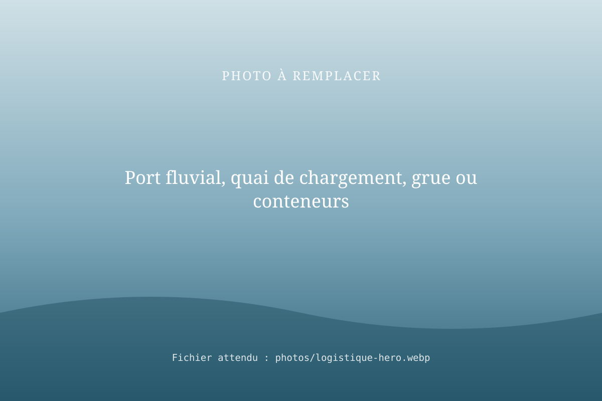
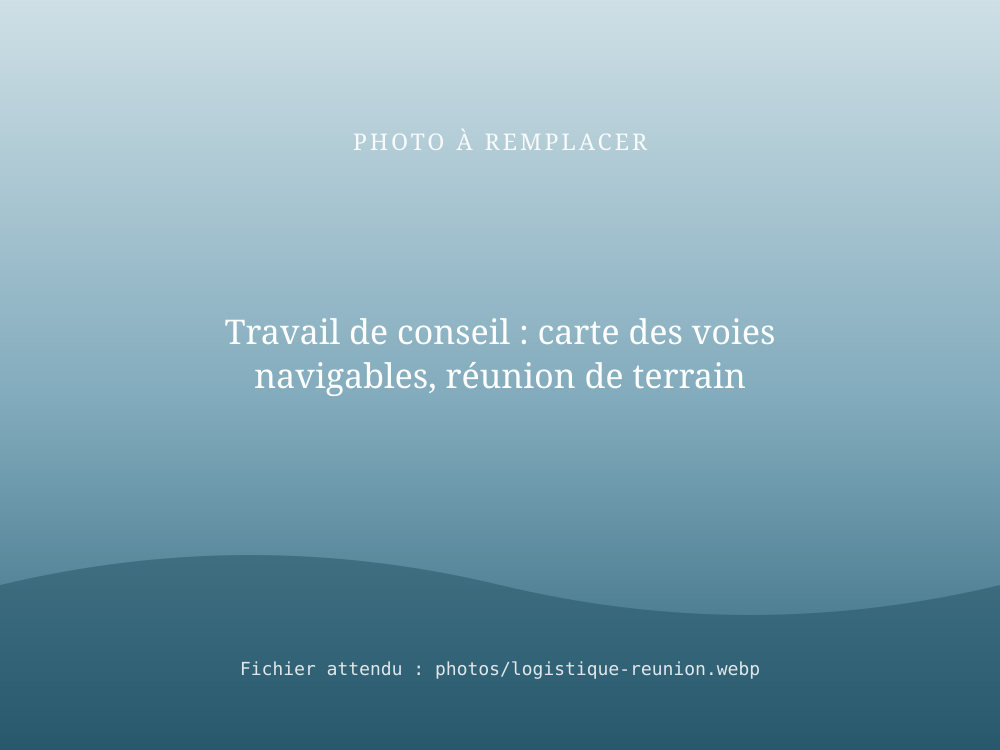

Conseil en logistique fluviale
RivesEnRêves conseille les entreprises, les opérateurs et les gestionnaires dans l'organisation de leur logistique fluviale. Notre expertise a notamment été mobilisée lors d'une mission de conseil en logistique pour VNF.

Ce que nous faisons
- Diagnostic logistique : vos flux, vos sites, vos contraintes.
- Conception de chaînes fluviales : choix des ports, des ruptures de charge et des acteurs.
- Mise en relation : opérateurs, bateliers, gestionnaires de ports et de voies navigables.
- Accompagnement de la mise en œuvre : premiers transports, ajustements, suivi.
Une référence : VNF
RivesEnRêves a mené une mission de conseil en logistique fluviale pour VNF. Cette mission témoigne d'une connaissance concrète du réseau navigable et de ses enjeux logistiques. [À COMPLÉTER : objet de la mission et période, si leur diffusion est autorisée]

Vous envisagez de passer au fluvial ?
Commencez par une étude de report modal financée par VNF : elle vous dit, chiffres à l'appui, si la voie d'eau est faite pour vos flux.
Questions fréquentes
Qu'apporte un consultant en logistique fluviale ?
Il connaît les acteurs (ports, opérateurs, bateliers, gestionnaires de voies), les contraintes techniques et les coûts du fluvial. Il aide à concevoir une chaîne logistique réaliste et à éviter les écueils.
Avez-vous déjà travaillé pour VNF ?
Oui : RivesEnRêves a réalisé une mission de conseil en logistique fluviale pour VNF.
Quelle différence avec une étude de report modal ?
L'étude de report modal répond à la question « puis-je passer au fluvial ? » pour une entreprise donnée. Le conseil en logistique fluviale accompagne plus largement la conception et l'organisation de chaînes logistiques utilisant la voie d'eau.
Parlons de votre logistique
Présentez-nous votre activité et vos flux : nous vous proposons un premier échange.